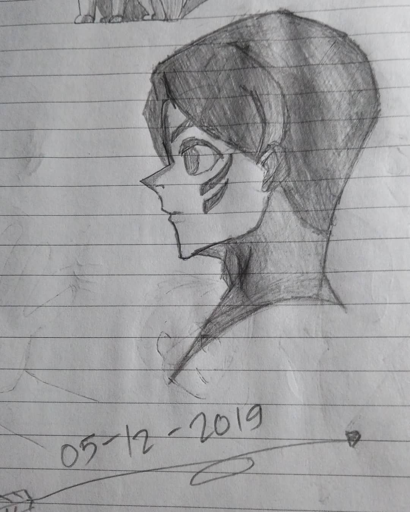
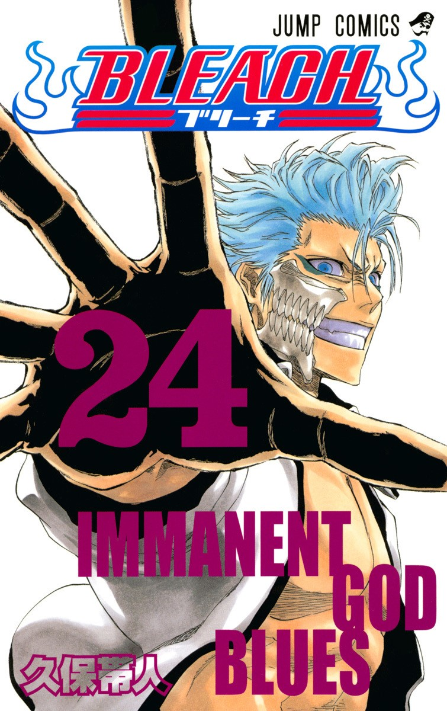
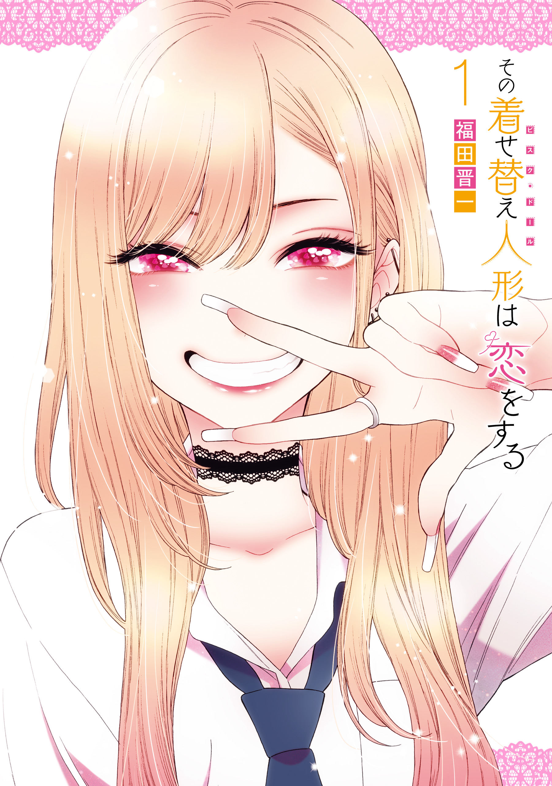

Perkenalkan nama saya Muhammad Choerul Anwar, saya seorang lulusan Teknik Informatika tahun 2022 yang sudah lama vakum ngoding, dan pada tahun 2024 kembali lagi belajar ngoding dari awal. Karena selama 2 tahun itu saya bekerja sebagai Kasir di Toko Grosir Kakek saya, lalu kemudia saya memutuskan untuk berhenti karena sakit pinggang.
Selain belajar ngoding, saya juga mencoba mengembangkan channel Youtube yang berisi clip-clip para streamer youtube yang saya edit sendiri sedemikian rupa dengan canva dan capcut,dll. Tapi sekarang semua videonya saya private karena tidak memenuhi syarat adsense.
Pendidikan
SD Negeri Karang Tengah
Boarding School SMP Islam Terpadi(IT) Al-Ukhuwah Subang
SMK Negeri 1 Subang, Jurusan Grafika
Universitas Mandiri Subang, Teknik Informatika Jenjang S1
Pengalaman Kerja
Kasir Toko Grosir (2022-2024)
Project
Berikut adalah projek yang telah saya kerjakan selama ini:
Halaman Profile Bandung
Halaman Profile Bandung, halaman web ini merupakan projek latihan pertama saya saat mengikuti Alur belajar Front-End Web Developer di Dicoding. Web ini
Halaman Profil Bandung
Landing Page Dicoding
Masih sama dengan sebelumnya, web ini pun merupakan salah satu projek latihan membuat sebuah landing page yang responsive. Sedikit berbeda dari sebelumnya, web ini menerapkan fixed position pada element aside yang untuk menaruh content yang isinya link social media.
Landing Page Dicoding
Skill
Seteleh saya berhenti bekerja sebagai kasir , kemudian saya mengikuti program beasiswa IDCamp 2024 dan mengambil alur belajar Front End Web Developer yang disediakan oleh Dicoding sehingga saya memiliki skill dasar Front End Developer yang akan berguna untuk kedepannya.
Selain Belajar Pemrograman, saya juga belajar editing baik itu video maupun gambar.
Berikut dibawah ini, Software editing yang saya kuasai:
Capcut Desktop
Canva
Coreldraw
Adobe Photoshop
Hobby
Sebenernya saya punya banyak hobi, tapi yang paling saya suka itu main gambar, baca manga/komik dan Gaming.
Gambar
Saya kalau gambar itu jarang di upload ke sosmed, soalnya gambarnya masih kurang bagus paling cuma beberapa aja itu pun gak terlalu bagus
Ini contoh beberapa gambar saya yang pernah saya upload di instagram saya:

Manga
Semua di awali dari anime Naruto, saking gk sabarnya nunggu rilis animenya tiap minggu akhirnya saya pindah haluan ke manganya karena rilis lebih dulu dibanding animenya.
Setelah saya baca Manga Naruto saya pun jadi tertarik dengan manga lainnya seperti One Piece dan Bleach, yang mana saat itu ke-3 komik tersebut dijuluki The Big Three. Lalu makin lama koleksi bacaan komik saya makin banyak hingga hari ini, tapi hanya beberapa saja yg sangat membekas di ingatan saya.
Berikut list Manga favorit saya:

Bleach (Tamat)
Frieren (Ongoing)
Haikyuu!! (Tamat)
Hinamatsuri (Tamat)
Kingdom (Ongoing)

My Dress up Darling (Ongoing)
Naruto (Tamat)
Nisekoi (Tamat)
One Piece (Ongoing)
One Punch Man (Ongoing)
ReLife (Tamat)
The Fable (Tamat)
Wotakoi (Tamat)
Yamada-kun to Lv999 no Koi wo Suru (Ongoing)
Yotsuba&! (Ongoing)
Game
Selain gambar dan baca manga saya juga hobi main game, bisa dibilang sepertinya saya itu lebih ke kecanduan main game sih dibanding hobi. Karena kebanyakan waktu saya habis cuman main game doang dibanding kegiatan lainnya, dan apakah saya jago bermain game? oh tentu saja tidak.
Berikut daftar game favorit dan yang paling sering saya mainkan: